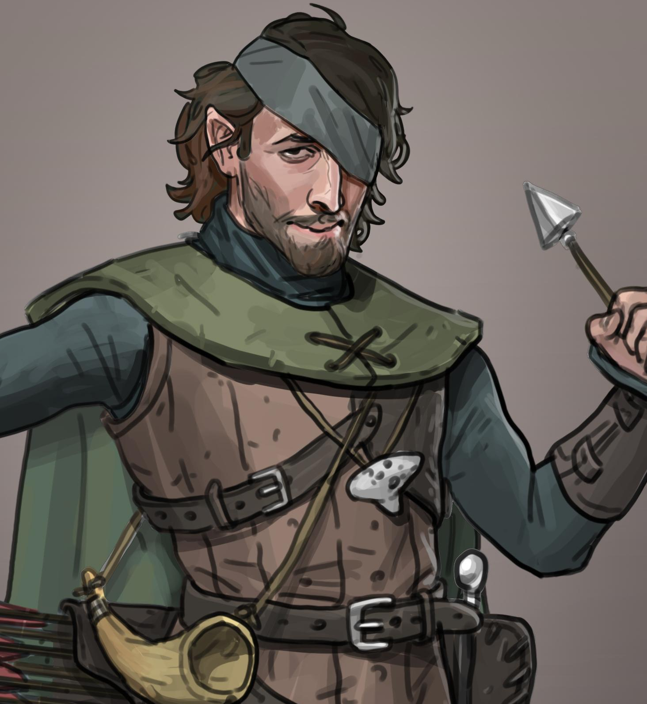

Playable Races > Half-Elf
Elves are mystical humanoid creatures attuned to worldly spirits. They came from another world eons ago. Originally an immortal race of celestial protectors, they sacrificed their infinite lifespans to experience mortal joys like love and lust.
Half-elves are a one in a million creature that's a result of a Human and an Elf somehow not being put off by one another. They are tragic beings that are mostly shunned by both races in some way; humans see them as distant, hedonistic and unnaturally beautiful, while true elves see them as hyperactive, ugly and annoying (appropriately calling them "half-humans.") They show a penchant for magic, but are identifiably just humans with longer ears.
Talent: Free talent at level 1.
Transcendence: Elves cannot be charmed or put to sleep, and may hide in plain sight.
Racials: +2 DEX +2 CHA -2 STR +4 Sleight of Hand
Health: 1d7 health points per level.
Origin: Half-elves are the only elves common enough to be regularly found in most major ran by humans, even if they represent a crushing minority of the population. Typically 1 in 10,000 in human settlements will be half-elves.